A light, practical interface for fleet maintenance. Twelve main screens share the same brand and application shell.
Generated design concepts with illustrative data. These are not native 4K images or working application screens.
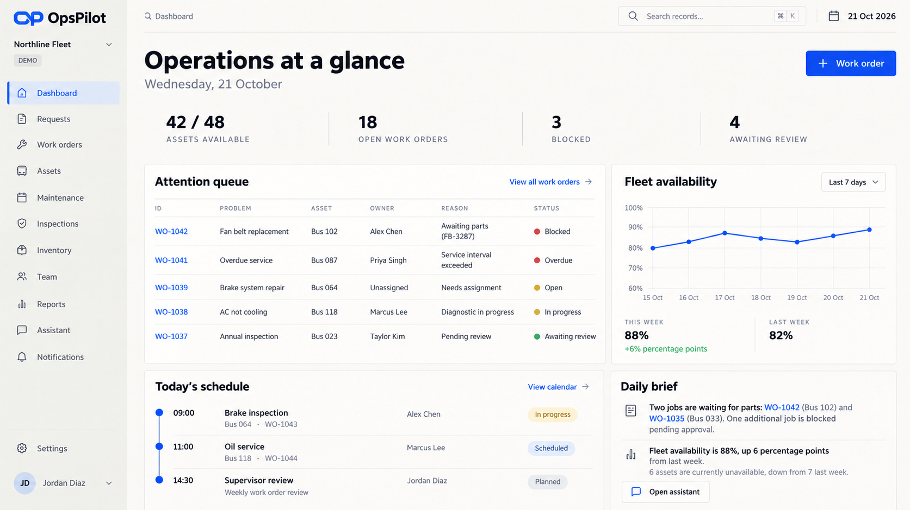
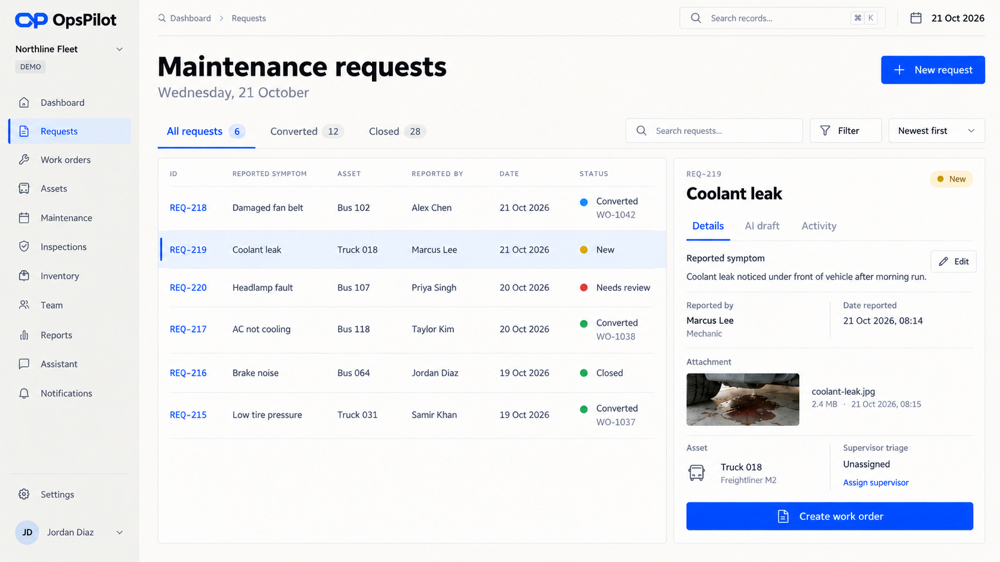
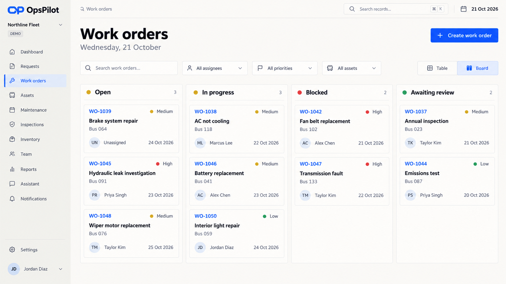
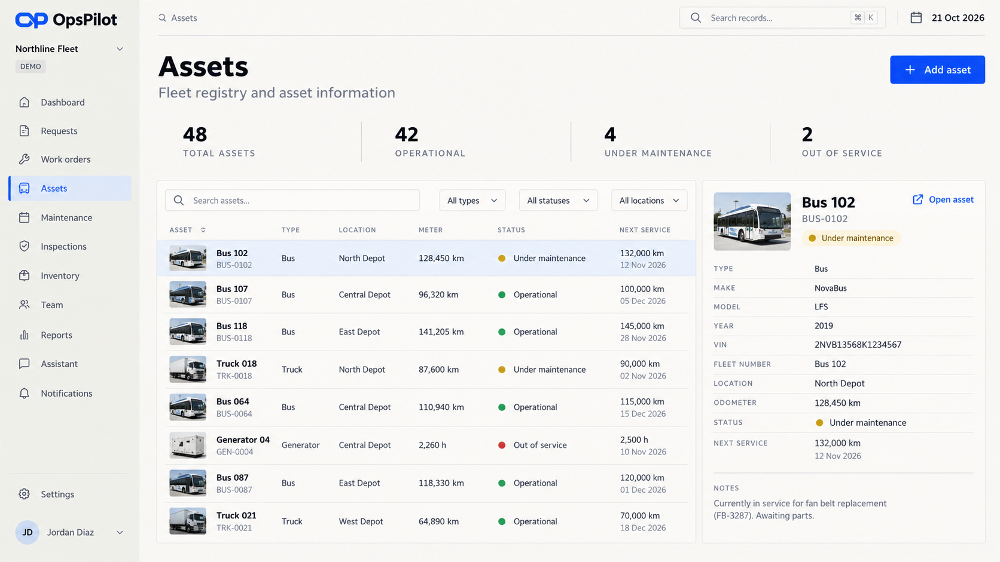
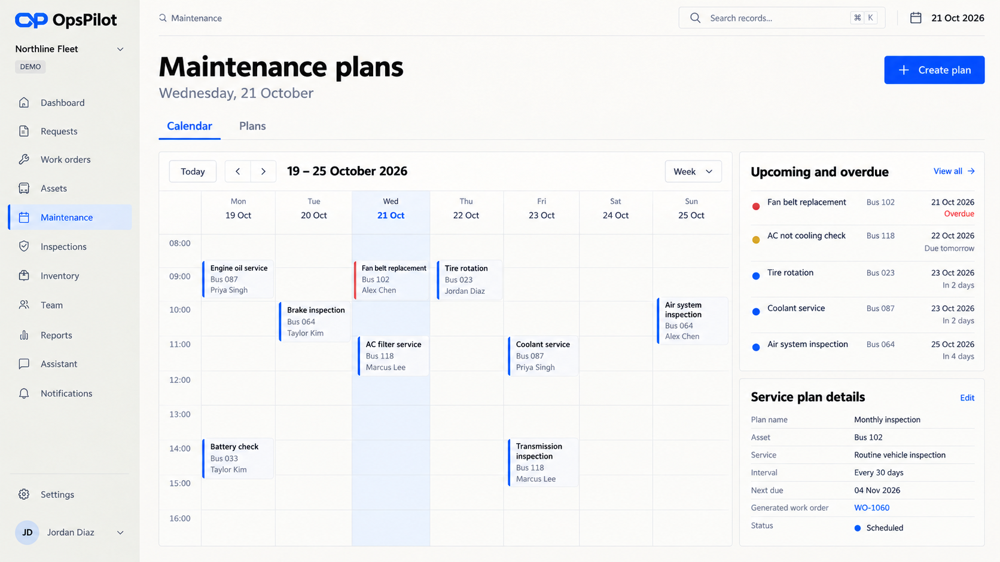
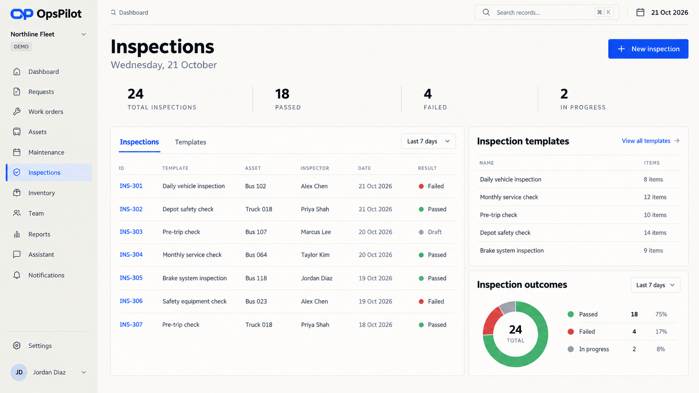
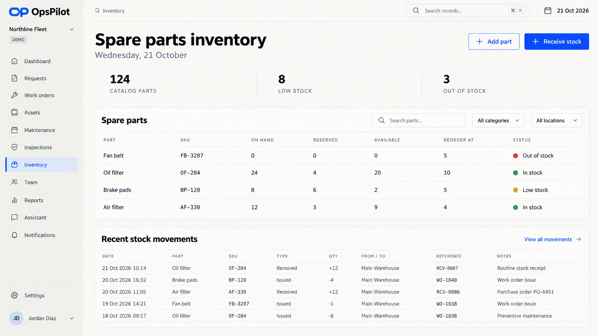
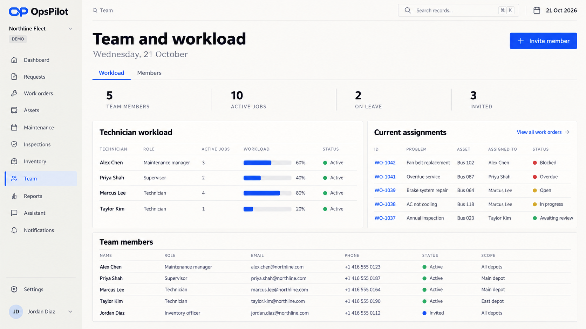
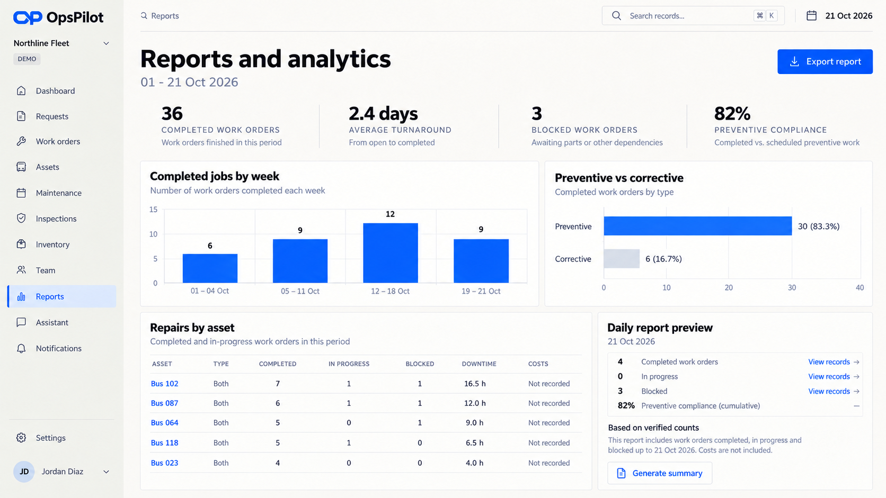
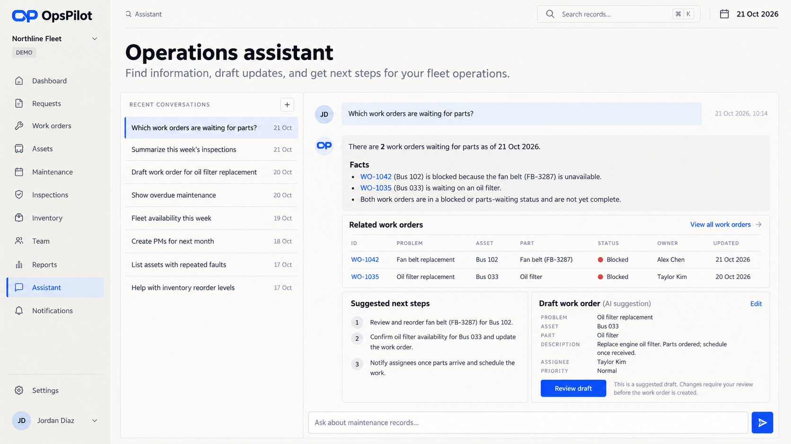
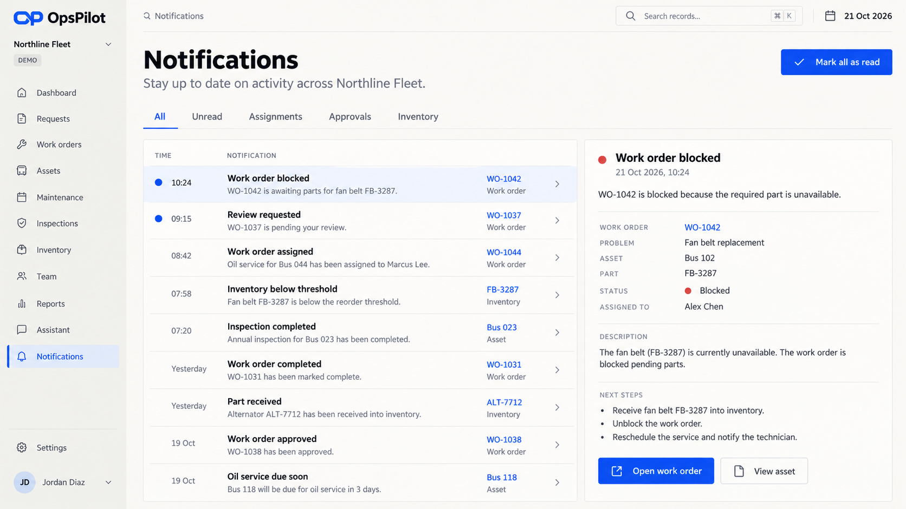
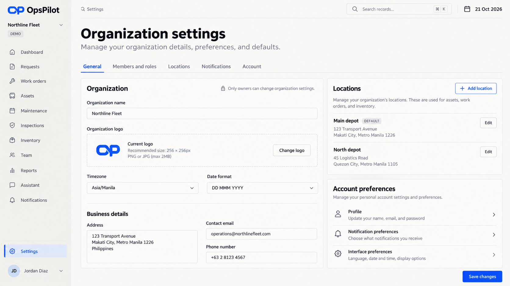